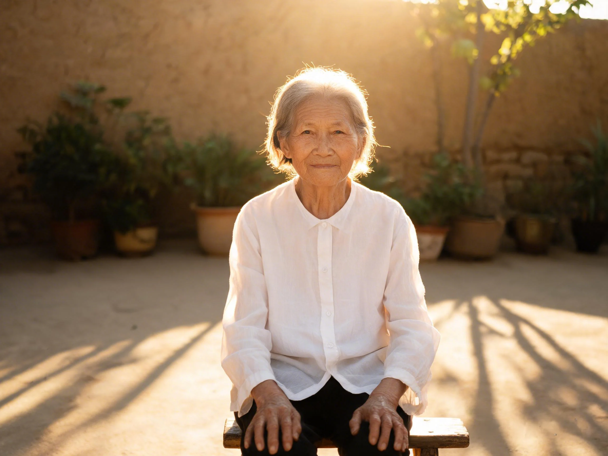

Turning Your Back to the Sun: A Midsummer Folk Ritual
Every year, around late July, the calendar entered a period called sanfu tian (三伏天) — the three hottest stretches of summer, when the heat settled into the concrete and refused to leave even after dark. This was the season my grandmother had been waiting for. Not to hide from the sun. To sit in it. Every morning at eight-thirty, before the heat turned aggressive, she'd carry a low wooden stool into the courtyard, set it down in the one spot where the morning light fell clean and unobstructed, and sit — back straight, eyes closed, a dry towel draped over her shoulders — facing away from the sun. She'd stay like that for fifteen minutes, perfectly still, while the other grandmothers in the courtyard did the same in their own patches of light. Nobody spoke. Nobody needed to. The sun was doing the talking.

The hottest days of the year
Sanfu tian is not a date on the Western calendar. It's calculated each year from the Chinese lunar calendar — three ten-day periods that fall somewhere between mid-July and late August, when the heat is at its heaviest. The word fu (伏) means "to lie hidden" or "to crouch." The image is of a person and a dog, both flattened by the heat, waiting for it to pass. But the grandmothers in my courtyard didn't lie hidden. They went outside.
The ritual was communal without being social. By eight-thirty, the courtyard would have four or five women, each on her own stool, each facing away from the sun, each with a towel across her shoulders. They were far enough apart that conversation would have required raising voices, and nobody did. It was not a gathering. It was parallel solitude — everyone doing the same thing at the same time, together but alone, the way people read in a library or swim laps in a pool.
My grandmother's spot was against the east wall, where the morning sun hit first and stayed longest — roughly from eight to nine-thirty before the angle shifted and the light moved on. She'd been using the same spot for so many years that the grass there was thinner than everywhere else, worn down by the legs of her stool. "The wall holds the warmth," she told me once. "Even after the sun moves, the wall remembers."
Morning sun, never midday sun
The timing was non-negotiable. The sun had to be morning sun — that specific slant of light that falls between eight and nine, warm on the skin but not yet hot, bright but not blinding. "When the sun just clears the wall," she said, "that's the window." By ten o'clock the window was closed. By noon, sitting in direct sun was not a ritual but a hazard — something only tourists did, or people who didn't know better.
The duration mattered too. Fifteen minutes. Twenty if the morning was cooler than usual. Never more. She didn't set a timer, but she knew — the same internal clock that told her when the rice was done or the tea had steeped long enough. When her back began to feel warm through her shirt, when the first suggestion of sweat appeared at her temples, she'd stand up, fold the towel, and carry the stool back inside. "Your back should feel warm, not hot," she said. "Warm means the sun is talking to you. Hot means it's yelling. You don't want it to yell."
She wore a thin cotton shirt — never bare skin. The fabric was part of the ritual. It filtered the sun, softened it, spread the warmth evenly across her shoulder blades. Taking the shirt off would have been faster, but faster was not the point. The same logic governed everything in her kitchen: the sun, like the warmth from a quilt aired on a clear morning, was good only when you knew how to receive it.
What the grandmothers knew
The idea behind sanfu sunning comes from a folk understanding of the body that has circulated in Chinese households for centuries. The back, in that understanding, is the body's yang surface — the side that faces the world, the side that carries tension, the side most exposed to wind and cold. Summer, and specifically the hottest stretch of summer, was seen as the one time of year when the external yang of the sun was strong enough to penetrate deep into the body and drive out the cold that had accumulated over the previous winter.
I'm not endorsing this framework. I'm reporting it — because it's what my grandmother believed, and what her mother believed, and what millions of people across China still believe loudly enough to carry a stool into the courtyard every July morning. The ritual has outlived the theory. Even people who don't subscribe to the cosmology still do the sunning, because it feels good and because their grandmother did it and because some habits don't need a paper trail to survive.
There's a practical layer too, one that doesn't require any theory at all. We spend most of our summers running from air-conditioned rooms to air-conditioned cars to air-conditioned offices. Our bodies never feel the season they're in. We're cold indoors in July and wonder why our hands are freezing in November. Fifteen minutes of morning sun on your back is the simplest possible correction — not a cure, not a treatment, just a reminder. This is summer. This is what warmth feels like. Your body remembers.
If you try it
This is not medical advice. It's a cultural record of what the grandmothers in my courtyard did, written down so it isn't lost:
- The time: Eight to nine in the morning, when the sun is still gentle. Never midday. Never afternoon. If the sun feels harsh on your face, it's too late — wait until tomorrow.
- The clothes: A thin cotton shirt, light-colored. Do not take it off. The fabric is not a barrier — it's a filter. You want warmth, not a burn.
- The position: Sit on a low stool with your back to the sun. A towel over your shoulders catches the first sweat and keeps your neck from burning. Stay still. This is not exercise.
- The duration: Fifteen minutes. Set a timer if you tend to lose track of time. When your back feels warm through the shirt — not hot, not prickly, just warm — you're done. Stand up, go inside, drink a glass of water.
- Afterward: Stay out of air conditioning for at least an hour. The grandmothers were adamant about this — going straight from the warm sun into a cold room was, in their view, worse than not sunning at all. Let your body cool down naturally.
Drink water before you go out. Don't do this on an empty stomach. And if the morning is already sweltering by eight — if the air itself feels like a blanket — skip it. The ritual is for the hottest season, yes, but only on its gentlest mornings. Some days the sun shows up angry, and on those days even the grandmothers stayed inside. Afterward, when the heat had settled into her skin and the stool was back in its corner, she'd sometimes pour herself a cup of mung bean soup — the summer's two partners, one warming and one cooling, the way the season itself swung between extremes.